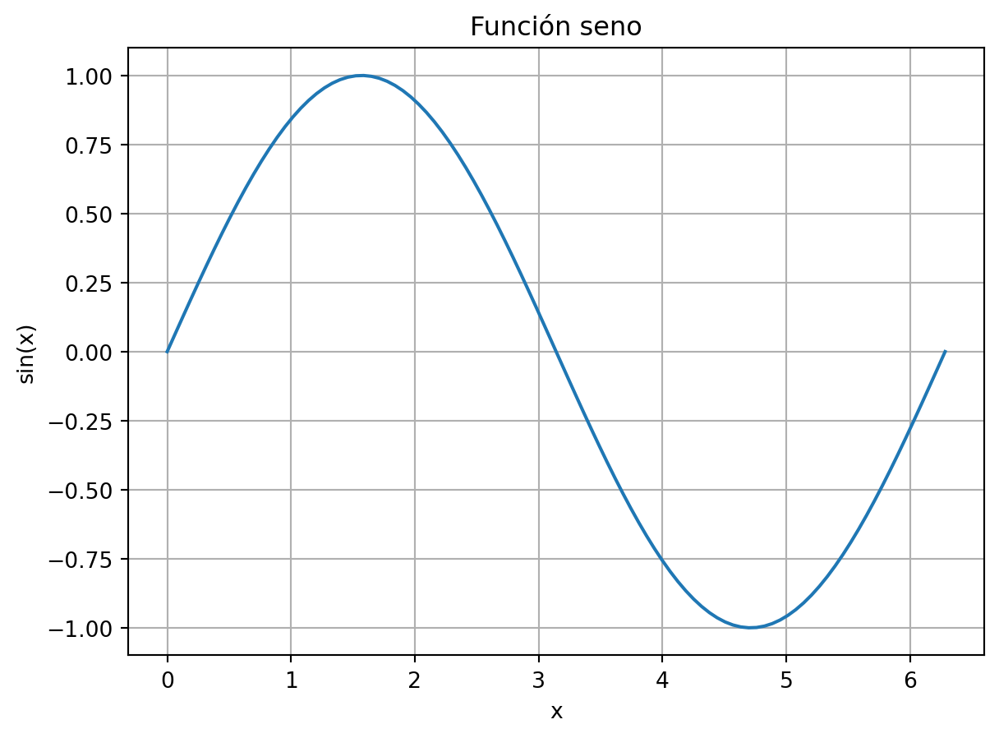
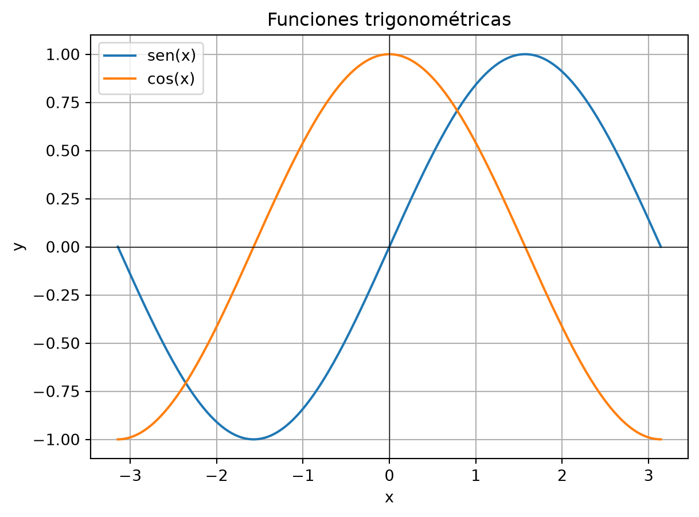
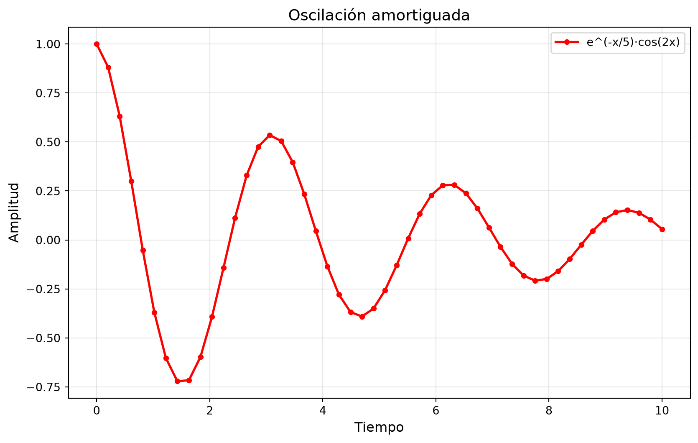
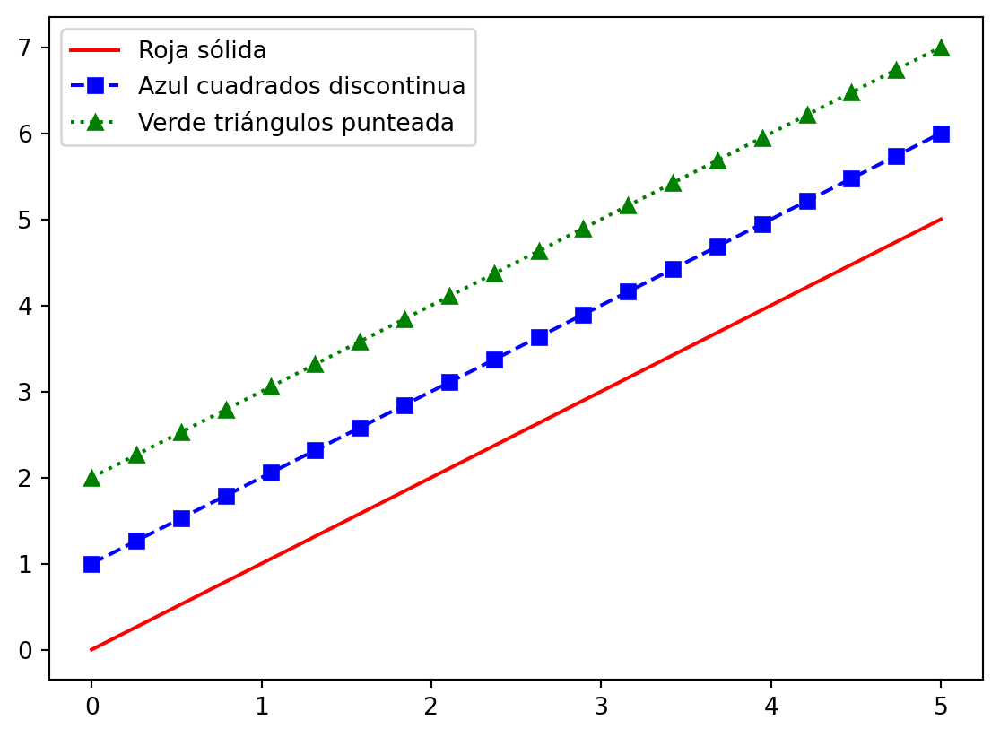
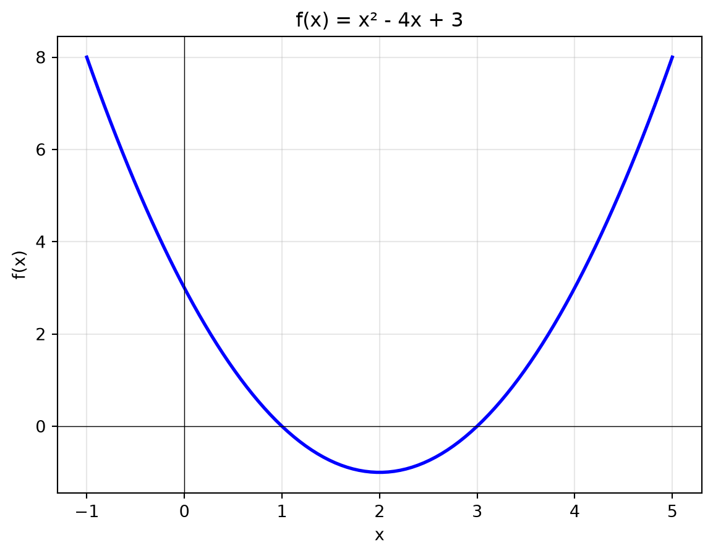
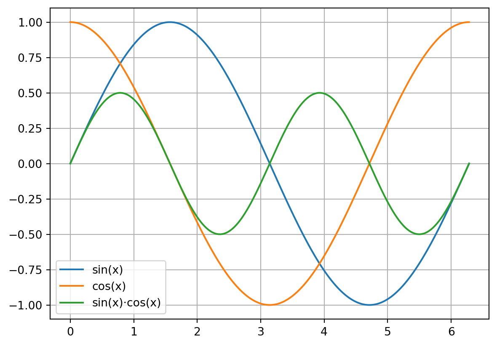
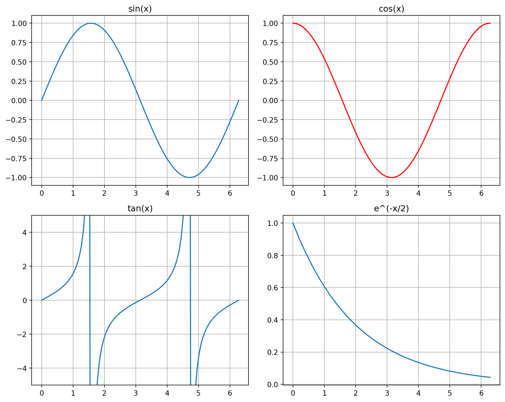
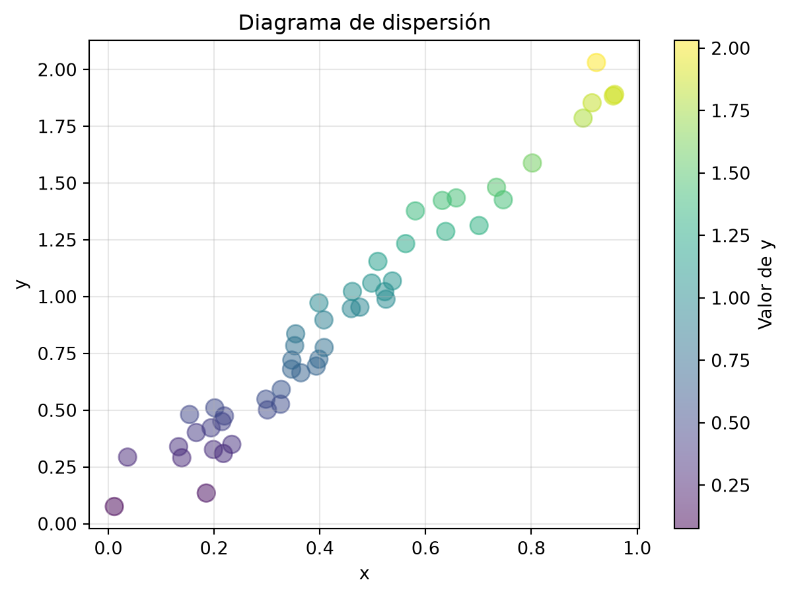

Mostrar código
import numpy as np
np.cos(1)np.float64(0.5403023058681398)Este apunte comienza con una introducción breve a Python, orientada específicamente a su uso en el contexto del Cálculo Numérico. El objetivo de este capítulo no es presentar un curso completo de programación, sino proporcionar las herramientas mínimas necesarias para comprender, implementar y experimentar con los métodos numéricos que se desarrollarán a lo largo de la materia.
Python es un lenguaje de programación interpretado, de alto nivel y de propósito general, ampliamente utilizado tanto en el ámbito académico como profesional. Su sintaxis clara, junto con un ecosistema muy amplio de bibliotecas científicas, lo convierten en una herramienta especialmente adecuada para el modelado matemático, el análisis numérico y la visualización de resultados.
En esta materia utilizaremos principalmente las bibliotecas:
Ocasionalmente se mencionarán otras bibliotecas estándar, pero siempre en la medida en que resulten necesarias para ilustrar conceptos matemáticos.
Si no estás familiarizado con Python, te recomendamos utilizar Anaconda para este curso.
Anaconda es una distribución gratuita y de código abierto de Python diseñada específicamente para la ciencia de datos, el análisis de datos y la programación científica. Incluye:
¿Por qué usar Anaconda?
Instalación: https://www.anaconda.com/download
Spyder (Scientific Python Development Environment) es un entorno de desarrollo integrado diseñado para programación científica en Python. Características principales:
Una vez abierto Spyder:
El prompt In [1]: indica donde cargar las órdenes:
In [1]: 2+2
Out[1]: 4a y A son variables distintas# es un comentarioclear o usa Ctrl + LHerramientas > Preferencias > Directorio de trabajo actualCuando trabajamos con algoritmos numéricos, necesitamos herramientas que no vamos a programar nosotros mismos. Los módulos son librerías que contienen funciones ya desarrolladas.
Por ejemplo, la computadora por sí misma no puede calcular funciones trigonométricas. Para eso usamos módulos preexistentes:
import numpy as np
np.cos(1)np.float64(0.5403023058681398)NumPy (numpy) es una biblioteca que contiene muchas funciones matemáticas programadas en módulos (archivos .py).
Optamos por llamarlo np en lugar de numpy para mayor practicidad en la escritura.
import numpy as np?
Sería posible escribir from numpy import * para evitar el prefijo np., pero esto es desaconsejable porque:
min y max)Para ver todas las funciones disponibles:
dir(np)Para conocer qué hace cada función, usamos el comando help:
help(np.cos)Durante el curso utilizaremos diferentes módulos que nos facilitarán el trabajo con matrices y vectores.
.)
La función del punto "." establece que el comando de la derecha está contenido en el directorio de la izquierda.
np.cos significa: “De la biblioteca numpy utilizar la función cos”
Para ver la importancia de esto, intentemos usar cos sin importar NumPy:
cos(1) # Esto dará error--------------------------------------------------------------------------- NameError Traceback (most recent call last) Cell In[2], line 1 ----> 1 cos(1) # Esto dará error NameError: name 'cos' is not defined
Python no reconoce cos porque no está en el espacio de nombres base. Necesitamos importar NumPy primero.
Python tiene un módulo básico de matemáticas llamado math:
import math
math.cos(1)0.5403023058681398math y cuándo numpy?
math: funciones matemáticas básicas para números individualesnumpy: operaciones vectorizadas, matrices, álgebra linealPara cálculo numérico, siempre usaremos NumPy porque permite operar con arrays completos de forma eficiente.
Ejemplo:
import numpy as np
import math
# Con math (solo acepta un número)
x = 1.5
resultado_math = math.cos(x)
print(f"math.cos({x}) = {resultado_math}")
# Con numpy (acepta arrays)
x_array = np.array([0, np.pi/4, np.pi/2, np.pi])
resultado_numpy = np.cos(x_array)
print(f"np.cos(array) = {resultado_numpy}")math.cos(1.5) = 0.0707372016677029
np.cos(array) = [ 1.00000000e+00 7.07106781e-01 6.12323400e-17 -1.00000000e+00]Además de NumPy, existen otras bibliotecas que usaremos ocasionalmente:
# Matplotlib para gráficos
import matplotlib.pyplot as plt
# SciPy para métodos científicos avanzados
import scipyPython puede usarse como una calculadora avanzada. Las operaciones aritméticas básicas son:
# Suma
2 + 35# Multiplicación
5 * 630# División entera (cociente)
20 // 36# Resta
10 - 46# División
20 / 45.0# Módulo (resto)
20 % 32# Potencia
2**8256Python respeta la precedencia estándar de operadores:
()**/, *, //, %+, -# Sin paréntesis
2 + 3 * 414# Con paréntesis
(2 + 3) * 420NumPy proporciona funciones matemáticas comunes:
import numpy as np
# Funciones trigonométricas
print(f"sen(π/2) = {np.sin(np.pi/2)}")
print(f"cos(π) = {np.cos(np.pi)}")
print(f"tan(π/4) = {np.tan(np.pi/4)}")sen(π/2) = 1.0
cos(π) = -1.0
tan(π/4) = 0.9999999999999999# Exponencial y logaritmo
print(f"e^2 = {np.exp(2)}")
print(f"ln(e) = {np.log(np.e)}")
print(f"log₁₀(100) = {np.log10(100)}")e^2 = 7.38905609893065
ln(e) = 1.0
log₁₀(100) = 2.0# Raíz cuadrada
print(f"√16 = {np.sqrt(16)}")
print(f"√2 = {np.sqrt(2)}")√16 = 4.0
√2 = 1.4142135623730951NumPy incluye constantes importantes:
# Constante pi
print(f"π = {np.pi}")
# Constante e (número de Euler)
print(f"e = {np.e}")
# Infinito
print(f"∞ = {np.inf}")π = 3.141592653589793
e = 2.718281828459045
∞ = infLas variables nos permiten almacenar valores para usarlos más tarde:
# Asignar un valor a una variable
x = 5
print(x)5# Usar la variable en cálculos
y = 2 * x + 3
print(y)13# Reasignar valores
x = 10
y = 2 * x + 3
print(y)23_)variable ≠ Variableif, for, while, etc.)Buenos nombres:
velocidad = 100
radio_circulo = 5
valor_1 = 10
_temporal = 20Nombres inválidos:
2valor = 10 # Comienza con número
mi-variable = 5 # Contiene guión
for = 3 # Palabra reservadaPython tiene varios tipos de datos básicos:
# Entero (int)
a = 10
print(f"{a} es de tipo {type(a)}")
# Flotante (float)
b = 3.14
print(f"{b} es de tipo {type(b)}")
# Cadena de texto (str)
c = "Hola"
print(f"{c} es de tipo {type(c)}")
# Booleano (bool)
d = True
print(f"{d} es de tipo {type(d)}")10 es de tipo <class 'int'>
3.14 es de tipo <class 'float'>
Hola es de tipo <class 'str'>
True es de tipo <class 'bool'>Python permite convertir entre tipos de datos:
# Convertir a entero
x = int(3.7)
print(f"int(3.7) = {x}")
# Convertir a flotante
y = float(5)
print(f"float(5) = {y}")
# Convertir a cadena
z = str(123)
print(f"str(123) = '{z}' (tipo: {type(z)})")int(3.7) = 3
float(5) = 5.0
str(123) = '123' (tipo: <class 'str'>)Continúa en la siguiente sección… ## Manipulación de vectores y matrices {#sec-vectores-matrices}
En cálculo numérico, los vectores y matrices son estructuras fundamentales. NumPy proporciona herramientas eficientes para trabajar con ellas a través del objeto ndarray (n-dimensional array).
Un vector en NumPy es un array unidimensional. Hay varias formas de crearlo:
array()import numpy as np
# Vector a partir de una lista
v = np.array([1, 2, 3, 4, 5])
print(v)
print(f"Tipo: {type(v)}")[1 2 3 4 5]
Tipo: <class 'numpy.ndarray'>import numpy as np
# Vector de flotantes
v_float = np.array([1.5, 2.7, 3.2])
print(v_float)
print(f"Dtype: {v_float.dtype}")[1.5 2.7 3.2]
Dtype: float64Aunque Python tiene listas nativas, los arrays de NumPy tienen ventajas importantes:
# Lista de Python
lista_python = [1, 2, 3, 4, 5]
print(f"Lista Python: {lista_python}")
# Array de NumPy
array_numpy = np.array([1, 2, 3, 4, 5])
print(f"Array NumPy: {array_numpy}")Lista Python: [1, 2, 3, 4, 5]
Array NumPy: [1 2 3 4 5]¿Cuál es la diferencia?
# Lista puede mezclar tipos
lista_mixta = [1, 2.5, "texto", True]
print(lista_mixta)
# Array NumPy convierte todo al mismo tipo
array_mixto = np.array([1, 2.5, 3])
print(f"Array: {array_mixto}, dtype: {array_mixto.dtype}")[1, 2.5, 'texto', True]
Array: [1. 2.5 3. ], dtype: float64Las operaciones matemáticas con arrays de NumPy son vectorizadas, es decir, se aplican elemento por elemento:
v = np.array([1, 2, 3, 4, 5])
# Multiplicar por escalar
print(f"2 * v = {2 * v}")
# Sumar escalar
print(f"v + 10 = {v + 10}")
# Aplicar función
print(f"v² = {v**2}")2 * v = [ 2 4 6 8 10]
v + 10 = [11 12 13 14 15]
v² = [ 1 4 9 16 25]# Operaciones entre vectores
v1 = np.array([1, 2, 3])
v2 = np.array([4, 5, 6])
print(f"v1 + v2 = {v1 + v2}")
print(f"v1 * v2 = {v1 * v2}") # Producto elemento a elementov1 + v2 = [5 7 9]
v1 * v2 = [ 4 10 18]En NumPy, el operador * realiza multiplicación elemento a elemento, no el producto punto (escalar):
v1 = np.array([1, 2, 3])
v2 = np.array([4, 5, 6])
# Producto elemento a elemento
prod_elementos = v1 * v2
print(f"v1 * v2 (elementos): {prod_elementos}")
# Producto punto (escalar)
prod_punto = np.dot(v1, v2)
print(f"v1 · v2 (punto): {prod_punto}")
# Alternativa: usar @
prod_punto2 = v1 @ v2
print(f"v1 @ v2 (punto): {prod_punto2}")v1 * v2 (elementos): [ 4 10 18]
v1 · v2 (punto): 32
v1 @ v2 (punto): 32range() y arange()Estas funciones crean secuencias de números:
# range() - función de Python puro
r = range(0, 10, 2) # inicio, fin (exclusivo), paso
print(f"range(0, 10, 2): {list(r)}")range(0, 10, 2): [0, 2, 4, 6, 8]# arange() - versión NumPy
a = np.arange(0, 10, 2)
print(f"arange(0, 10, 2): {a}")
print(f"Tipo: {type(a)}")arange(0, 10, 2): [0 2 4 6 8]
Tipo: <class 'numpy.ndarray'>range() y arange()?
range(): función de Python, genera enteros, retorna un iteradorarange(): función de NumPy, puede generar flotantes, retorna un arraySintaxis de range(inicio, fin, paso): - inicio: primer valor (inclusivo) - fin: valor final (exclusivo) - paso: incremento (debe ser entero)
# range solo acepta enteros
r = range(0, 5, 1)
print(list(r))[0, 1, 2, 3, 4]Sintaxis de arange(inicio, fin, paso): - Similar a range() pero acepta flotantes
# arange acepta flotantes
a = np.arange(0, 2, 0.3)
print(a)[0. 0.3 0.6 0.9 1.2 1.5 1.8]# Ejemplos de arange
print("arange(10):", np.arange(10))
print("arange(5, 15):", np.arange(5, 15))
print("arange(0, 1, 0.1):", np.arange(0, 1, 0.1))arange(10): [0 1 2 3 4 5 6 7 8 9]
arange(5, 15): [ 5 6 7 8 9 10 11 12 13 14]
arange(0, 1, 0.1): [0. 0.1 0.2 0.3 0.4 0.5 0.6 0.7 0.8 0.9]linspace() - espaciado lineallinspace() crea un vector con un número específico de elementos espaciados uniformemente:
# linspace(inicio, fin, cantidad)
v = np.linspace(0, 10, 5)
print(f"linspace(0, 10, 5): {v}")linspace(0, 10, 5): [ 0. 2.5 5. 7.5 10. ]# Diferencia con arange
print("arange(0, 10, 2):", np.arange(0, 10, 2))
print("linspace(0, 10, 5):", np.linspace(0, 10, 5))arange(0, 10, 2): [0 2 4 6 8]
linspace(0, 10, 5): [ 0. 2.5 5. 7.5 10. ]arange() vs linspace()
| Función | Parámetros | Uso típico |
|---|---|---|
arange(inicio, fin, paso) |
Especifica el paso | Cuando conoces el incremento |
linspace(inicio, fin, n) |
Especifica el número de puntos | Cuando conoces cuántos puntos quieres |
# Para graficar, linspace es más útil
x = np.linspace(0, 2*np.pi, 100) # 100 puntos entre 0 y 2π
y = np.sin(x)
print(f"Creados {len(x)} puntos para graficar seno")Creados 100 puntos para graficar senoAcceder a elementos de un vector:
v = np.array([10, 20, 30, 40, 50])
# Acceso por índice (comienza en 0)
print(f"v[0] = {v[0]}")
print(f"v[2] = {v[2]}")
# Índices negativos (desde el final)
print(f"v[-1] = {v[-1]}") # Último elemento
print(f"v[-2] = {v[-2]}") # Penúltimov[0] = 10
v[2] = 30
v[-1] = 50
v[-2] = 40El slicing permite extraer subvectores:
v = np.array([0, 10, 20, 30, 40, 50, 60, 70, 80, 90])
# Sintaxis: v[inicio:fin:paso]
print(f"v[2:5] = {v[2:5]}") # Elementos 2, 3, 4
print(f"v[:4] = {v[:4]}") # Primeros 4 elementos
print(f"v[6:] = {v[6:]}") # Desde el índice 6 hasta el final
print(f"v[::2] = {v[::2]}") # Elementos pares (paso 2)
print(f"v[1::2] = {v[1::2]}") # Elementos impares
print(f"v[::-1] = {v[::-1]}") # Vector invertidov[2:5] = [20 30 40]
v[:4] = [ 0 10 20 30]
v[6:] = [60 70 80 90]
v[::2] = [ 0 20 40 60 80]
v[1::2] = [10 30 50 70 90]
v[::-1] = [90 80 70 60 50 40 30 20 10 0]En álgebra lineal, diferenciamos entre vectores fila y columna. NumPy maneja esto con arrays 2D:
# Vector 1D (ni fila ni columna explícita)
v_1d = np.array([1, 2, 3, 4])
print(f"Vector 1D: {v_1d}")
print(f"Shape: {v_1d.shape}")Vector 1D: [1 2 3 4]
Shape: (4,)# Vector fila (matriz 1×n)
v_fila = np.array([[1, 2, 3, 4]])
print(f"Vector fila:\n{v_fila}")
print(f"Shape: {v_fila.shape}")Vector fila:
[[1 2 3 4]]
Shape: (1, 4)# Vector columna (matriz n×1)
v_columna = np.array([[1], [2], [3], [4]])
print(f"Vector columna:\n{v_columna}")
print(f"Shape: {v_columna.shape}")Vector columna:
[[1]
[2]
[3]
[4]]
Shape: (4, 1)# De 1D a columna
v = np.array([1, 2, 3, 4])
v_col = v.reshape(-1, 1)
print(f"Vector columna:\n{v_col}")
# De 1D a fila
v_row = v.reshape(1, -1)
print(f"Vector fila:\n{v_row}")
# Transpose
v_col_t = v_col.T
print(f"Transpuesto:\n{v_col_t}")Vector columna:
[[1]
[2]
[3]
[4]]
Vector fila:
[[1 2 3 4]]
Transpuesto:
[[1 2 3 4]].T (transpuesta)
El atributo .T transpone un array:
v_fila = np.array([[1, 2, 3]])
print(f"Original (fila): {v_fila.shape}")
print(v_fila)
v_columna = v_fila.T
print(f"Transpuesto (columna): {v_columna.shape}")
print(v_columna)Original (fila): (1, 3)
[[1 2 3]]
Transpuesto (columna): (3, 1)
[[1]
[2]
[3]]| Tipo | Creación | Shape | Uso |
|---|---|---|---|
| Vector 1D | np.array([1,2,3]) |
(3,) |
General |
| Vector fila | np.array([[1,2,3]]) |
(1, 3) |
Álgebra lineal |
| Vector columna | np.array([[1],[2],[3]]) |
(3, 1) |
Álgebra lineal |
Una matriz es un array 2D en NumPy:
# Crear matriz directamente
A = np.array([[1, 2, 3],
[4, 5, 6],
[7, 8, 9]])
print("Matriz A:")
print(A)
print(f"Shape: {A.shape}") # (filas, columnas)Matriz A:
[[1 2 3]
[4 5 6]
[7 8 9]]
Shape: (3, 3)# Atributos útiles
print(f"Dimensiones: {A.ndim}")
print(f"Tamaño total: {A.size}")
print(f"Tipo de datos: {A.dtype}")Dimensiones: 2
Tamaño total: 9
Tipo de datos: int64# Matriz de ceros
Z = np.zeros((3, 4))
print("Matriz de ceros (3×4):")
print(Z)Matriz de ceros (3×4):
[[0. 0. 0. 0.]
[0. 0. 0. 0.]
[0. 0. 0. 0.]]# Matriz de unos
U = np.ones((2, 5))
print("Matriz de unos (2×5):")
print(U)Matriz de unos (2×5):
[[1. 1. 1. 1. 1.]
[1. 1. 1. 1. 1.]]# Matriz identidad
I = np.eye(4)
print("Matriz identidad (4×4):")
print(I)Matriz identidad (4×4):
[[1. 0. 0. 0.]
[0. 1. 0. 0.]
[0. 0. 1. 0.]
[0. 0. 0. 1.]]# Matriz con un valor específico
C = np.full((3, 3), 7)
print("Matriz llena de 7:")
print(C)Matriz llena de 7:
[[7 7 7]
[7 7 7]
[7 7 7]]# Matriz diagonal
D = np.diag([1, 2, 3, 4])
print("Matriz diagonal:")
print(D)Matriz diagonal:
[[1 0 0 0]
[0 2 0 0]
[0 0 3 0]
[0 0 0 4]]# Matriz aleatoria
R = np.random.rand(3, 3) # Valores entre 0 y 1
print("Matriz aleatoria:")
print(R)Matriz aleatoria:
[[1.75223417e-01 4.42399609e-04 7.54430080e-01]
[1.67023874e-01 4.39346396e-01 3.10148463e-01]
[6.04580133e-01 1.85009696e-01 7.18180572e-01]]# Matriz aleatoria con enteros
R_int = np.random.randint(0, 10, size=(3, 4)) # Enteros entre 0 y 9
print("Matriz de enteros aleatorios:")
print(R_int)Matriz de enteros aleatorios:
[[1 3 3 1]
[9 4 4 6]
[3 9 0 6]]A = np.array([[10, 20, 30],
[40, 50, 60],
[70, 80, 90]])
# Acceso a un elemento: A[fila, columna]
print(f"A[0, 0] = {A[0, 0]}")
print(f"A[1, 2] = {A[1, 2]}")
print(f"A[-1, -1] = {A[-1, -1]}")A[0, 0] = 10
A[1, 2] = 60
A[-1, -1] = 90# Acceso a filas completas
print(f"Fila 0: {A[0, :]}")
print(f"Fila 1: {A[1, :]}")
# Acceso a columnas completas
print(f"Columna 0: {A[:, 0]}")
print(f"Columna 2: {A[:, 2]}")Fila 0: [10 20 30]
Fila 1: [40 50 60]
Columna 0: [10 40 70]
Columna 2: [30 60 90]# Submatrices
print("Submatriz (primeras 2 filas, últimas 2 columnas):")
print(A[:2, 1:])Submatriz (primeras 2 filas, últimas 2 columnas):
[[20 30]
[50 60]]# Modificar elementos
A = np.array([[1, 2, 3],
[4, 5, 6]])
print("Original:")
print(A)
A[0, 1] = 99
print("\nDespués de A[0,1] = 99:")
print(A)Original:
[[1 2 3]
[4 5 6]]
Después de A[0,1] = 99:
[[ 1 99 3]
[ 4 5 6]]# Modificar filas completas
A[1, :] = [7, 8, 9]
print("Después de modificar fila 1:")
print(A)Después de modificar fila 1:
[[ 1 99 3]
[ 7 8 9]]# Modificar columnas
A[:, 0] = [10, 20]
print("Después de modificar columna 0:")
print(A)Después de modificar columna 0:
[[10 99 3]
[20 8 9]]A = np.array([[1, 2],
[3, 4]])
B = np.array([[5, 6],
[7, 8]])
# Suma de matrices
print("A + B:")
print(A + B)
# Producto elemento a elemento
print("\nA * B (elemento a elemento):")
print(A * B)
# Producto matricial
print("\nA @ B (producto matricial):")
print(A @ B)A + B:
[[ 6 8]
[10 12]]
A * B (elemento a elemento):
[[ 5 12]
[21 32]]
A @ B (producto matricial):
[[19 22]
[43 50]]# Operaciones con escalares
print("2 * A:")
print(2 * A)
print("\nA²:")
print(A ** 2) # Elemento a elemento, no potencia matricial2 * A:
[[2 4]
[6 8]]
A²:
[[ 1 4]
[ 9 16]]A * B: producto elemento a elemento (Hadamard)A @ B o np.dot(A, B): producto matricialA = np.array([[1, 2], [3, 4]])
B = np.array([[5, 6], [7, 8]])
print("A * B (Hadamard):")
print(A * B)
print("\nA @ B (matricial):")
print(A @ B)A * B (Hadamard):
[[ 5 12]
[21 32]]
A @ B (matricial):
[[19 22]
[43 50]]A = np.array([[1, 2, 3],
[4, 5, 6],
[7, 8, 9]])
# Transpuesta
print("Transpuesta:")
print(A.T)
# Traza (suma de la diagonal)
print(f"\nTraza: {np.trace(A)}")
# Determinante
print(f"Determinante: {np.linalg.det(A):.2f}")Transpuesta:
[[1 4 7]
[2 5 8]
[3 6 9]]
Traza: 15
Determinante: 0.00# Inversa (si existe)
B = np.array([[1, 2],
[3, 4]])
B_inv = np.linalg.inv(B)
print("Matriz B:")
print(B)
print("\nInversa de B:")
print(B_inv)
print("\nVerificación B @ B⁻¹:")
print(B @ B_inv)Matriz B:
[[1 2]
[3 4]]
Inversa de B:
[[-2. 1. ]
[ 1.5 -0.5]]
Verificación B @ B⁻¹:
[[1.0000000e+00 0.0000000e+00]
[8.8817842e-16 1.0000000e+00]]NumPy permite seleccionar elementos usando condiciones lógicas:
v = np.array([1, 5, 8, 3, 10, 2, 7])
# Máscara booleana
mascara = v > 5
print(f"Vector: {v}")
print(f"Máscara (v > 5): {mascara}")
print(f"Elementos > 5: {v[mascara]}")Vector: [ 1 5 8 3 10 2 7]
Máscara (v > 5): [False False True False True False True]
Elementos > 5: [ 8 10 7]# Directamente
print(f"Elementos pares: {v[v % 2 == 0]}")
print(f"Elementos entre 3 y 8: {v[(v >= 3) & (v <= 8)]}")Elementos pares: [ 8 10 2]
Elementos entre 3 y 8: [5 8 3 7]# Con matrices
A = np.array([[1, 2, 3],
[4, 5, 6],
[7, 8, 9]])
# Elementos mayores a 5
print(f"Elementos > 5:\n{A[A > 5]}")
# Modificar elementos con condición
A[A > 5] = 0
print(f"\nDespués de poner 0 a elementos > 5:")
print(A)Elementos > 5:
[6 7 8 9]
Después de poner 0 a elementos > 5:
[[1 2 3]
[4 5 0]
[0 0 0]]Continúa en la siguiente parte…
NumPy y SciPy proporcionan herramientas eficientes para resolver sistemas de ecuaciones lineales de la forma \(Ax = b\).
np.linalg.solve()import numpy as np
# Sistema: 2x + 3y = 8
# x - y = -1
#
# En forma matricial: Ax = b
A = np.array([[2, 3],
[1, -1]])
b = np.array([8, -1])
# Resolver
x = np.linalg.solve(A, b)
print(f"Solución: x = {x[0]:.2f}, y = {x[1]:.2f}")
# Verificar
print(f"Verificación A @ x = {A @ x}")
print(f"Debería ser b = {b}")Solución: x = 1.00, y = 2.00
Verificación A @ x = [ 8. -1.]
Debería ser b = [ 8 -1]# Sistema: x + 2y + z = 6
# 2x + y - z = 3
# -x + y + 2z = 5
A = np.array([[1, 2, 1],
[2, 1, -1],
[-1, 1, 2]])
b = np.array([6, 3, 5])linalg.solve()
Para que el sistema tenga solución única:
# Verificar que A sea invertible
A = np.array([[1, 2, 1],
[2, 1, -1],
[-1, 1, 2]])
det_A = np.linalg.det(A)
print(f"Determinante de A: {det_A:.4f}")
if abs(det_A) > 1e-10:
print("A es invertible ✓")
else:
print("A es singular (no invertible) ✗")Determinante de A: 0.0000
A es singular (no invertible) ✗# Resolver varios sistemas con la misma matriz A
A = np.array([[1, 2],
[3, 4]])
# Varios vectores b como columnas
B = np.array([[5, 6],
[7, 8]])
# Resolver todos a la vez
X = np.linalg.solve(A, B)
print("Soluciones (cada columna es una solución):")
print(X)Soluciones (cada columna es una solución):
[[-3. -4.]
[ 4. 5.]]Matplotlib es la biblioteca estándar para crear gráficos en Python.
import matplotlib.pyplot as plt
import numpy as np
# Datos
x = np.linspace(0, 2*np.pi, 100)
y = np.sin(x)
# Graficar
plt.plot(x, y)
plt.xlabel('x')
plt.ylabel('sin(x)')
plt.title('Función seno')
plt.grid(True)
plt.show()
x = np.linspace(-np.pi, np.pi, 200)
y1 = np.sin(x)
y2 = np.cos(x)
plt.plot(x, y1, label='sen(x)')
plt.plot(x, y2, label='cos(x)')
plt.xlabel('x')
plt.ylabel('y')
plt.title('Funciones trigonométricas')
plt.legend()
plt.grid(True)
plt.axhline(y=0, color='k', linewidth=0.5)
plt.axvline(x=0, color='k', linewidth=0.5)
plt.show()
x = np.linspace(0, 10, 50)
y = np.exp(-x/5) * np.cos(2*x)
plt.figure(figsize=(10, 6))
plt.plot(x, y, 'ro-', linewidth=2, markersize=4, label='e^(-x/5)·cos(2x)')
plt.xlabel('Tiempo', fontsize=12)
plt.ylabel('Amplitud', fontsize=12)
plt.title('Oscilación amortiguada', fontsize=14)
plt.legend(fontsize=10)
plt.grid(True, alpha=0.3)
plt.show()
Formato: '[color][marcador][línea]'
Colores: - 'r': rojo - 'b': azul - 'g': verde - 'k': negro - 'c': cian - 'm': magenta - 'y': amarillo
Marcadores: - 'o': círculo - 's': cuadrado - '^': triángulo - '*': estrella - '+': cruz - '.': punto
Líneas: - '-': sólida - '--': discontinua - ':': punteada - '-.': punto-raya
x = np.linspace(0, 5, 20)
plt.plot(x, x, 'r-', label='Roja sólida')
plt.plot(x, x+1, 'bs--', label='Azul cuadrados discontinua')
plt.plot(x, x+2, 'g^:', label='Verde triángulos punteada')
plt.legend()
plt.show()
Las funciones lambda son funciones anónimas útiles para gráficos rápidos:
# Función lambda
f = lambda x: x**2 - 4*x + 3
# Graficar
x = np.linspace(-1, 5, 100)
y = f(x)
plt.plot(x, y, 'b-', linewidth=2)
plt.axhline(y=0, color='k', linewidth=0.5)
plt.axvline(x=0, color='k', linewidth=0.5)
plt.grid(True, alpha=0.3)
plt.title('f(x) = x² - 4x + 3')
plt.xlabel('x')
plt.ylabel('f(x)')
plt.show()
# Múltiples funciones
f1 = lambda x: np.sin(x)
f2 = lambda x: np.cos(x)
f3 = lambda x: np.sin(x) * np.cos(x)
x = np.linspace(0, 2*np.pi, 200)
plt.plot(x, f1(x), label='sin(x)')
plt.plot(x, f2(x), label='cos(x)')
plt.plot(x, f3(x), label='sin(x)·cos(x)')
plt.legend()
plt.grid(True)
plt.show()
# Subplots: múltiples gráficos en una figura
x = np.linspace(0, 2*np.pi, 100)
fig, axs = plt.subplots(2, 2, figsize=(10, 8))
# subplot (0,0)
axs[0, 0].plot(x, np.sin(x))
axs[0, 0].set_title('sin(x)')
axs[0, 0].grid(True)
# subplot (0,1)
axs[0, 1].plot(x, np.cos(x), 'r')
axs[0, 1].set_title('cos(x)')
axs[0, 1].grid(True)
# subplot (1,0)
axs[1, 0].plot(x, np.tan(x))
axs[1, 0].set_title('tan(x)')
axs[1, 0].set_ylim(-5, 5)
axs[1, 0].grid(True)
# subplot (1,1)
axs[1, 1].plot(x, np.exp(-x/2))
axs[1, 1].set_title('e^(-x/2)')
axs[1, 1].grid(True)
plt.tight_layout()
plt.show()
# Scatter plot (diagrama de dispersión)
n = 50
x = np.random.rand(n)
y = 2*x + np.random.randn(n)*0.1
plt.scatter(x, y, alpha=0.5, s=100, c=y, cmap='viridis')
plt.colorbar(label='Valor de y')
plt.xlabel('x')
plt.ylabel('y')
plt.title('Diagrama de dispersión')
plt.grid(True, alpha=0.3)
plt.show()
Hasta ahora hemos trabajado de forma interactiva. Para proyectos más grandes, es útil crear scripts y funciones en archivos .py.
Un script es un archivo que contiene una secuencia de comandos de Python.
.py (ej: mi_script.py)Ejemplo de script (calculos.py):
# calculos.py
import numpy as np
# Calcular raíces de una ecuación cuadrática
a = 1
b = -5
c = 6
discriminante = b**2 - 4*a*c
x1 = (-b + np.sqrt(discriminante)) / (2*a)
x2 = (-b - np.sqrt(discriminante)) / (2*a)
print(f"Las raíces son: x1 = {x1}, x2 = {x2}")Las funciones nos permiten reutilizar código de forma eficiente.
# Definir una función
def saludar(nombre):
"""Función que saluda a una persona"""
return f"Hola, {nombre}!"
# Usar la función
mensaje = saludar("María")
print(mensaje)Hola, María!# Función con múltiples parámetros
def suma_cuadrados(a, b):
"""Retorna la suma de los cuadrados de a y b"""
return a**2 + b**2
resultado = suma_cuadrados(3, 4)
print(f"3² + 4² = {resultado}")3² + 4² = 25# Función con valores por defecto
def potencia(base, exponente=2):
"""Eleva base a la potencia exponente (por defecto 2)"""
return base ** exponente
print(f"5² = {potencia(5)}")
print(f"2³ = {potencia(2, 3)}")5² = 25
2³ = 8Continúa en la siguiente parte… ## Carga de archivos .txt y .csv {#sec-carga-archivos}
En análisis numérico frecuentemente necesitamos trabajar con datos almacenados en archivos.
NumPy puede leer archivos de texto con loadtxt():
# Supongamos que tenemos un archivo 'datos.txt' con:
# 1.0 2.0 3.0
# 4.0 5.0 6.0
# 7.0 8.0 9.0
datos = np.loadtxt('datos.txt')
print(datos)Para archivos CSV (valores separados por comas), podemos usar NumPy o pandas:
# Con NumPy
datos_csv = np.loadtxt('datos.csv', delimiter=',')
# Con pandas (más versátil)
import pandas as pd
df = pd.read_csv('datos.csv')
print(df.head()) # Primeras 5 filasimport numpy as np
# Crear datos
datos = np.array([[1, 2, 3],
[4, 5, 6],
[7, 8, 9]])
# Guardar en archivo
np.savetxt('mi_datos.txt', datos, fmt='%.2f')
# Leer del archivo
datos_leidos = np.loadtxt('mi_datos.txt')
print("Datos leídos:")
print(datos_leidos)Datos leídos:
[[1. 2. 3.]
[4. 5. 6.]
[7. 8. 9.]]loadtxt()# Saltar filas de encabezado
datos = np.loadtxt('archivo.txt', skiprows=1)
# Usar columnas específicas
datos = np.loadtxt('archivo.txt', usecols=(0, 2)) # Columnas 0 y 2
# Especificar delimitador
datos = np.loadtxt('archivo.txt', delimiter=';')
# Especificar tipo de datos
datos = np.loadtxt('archivo.txt', dtype=int)import numpy as np
# Crear datos
x = np.linspace(0, 2*np.pi, 10)
y = np.sin(x)
# Guardar como dos columnas
datos = np.column_stack((x, y))
np.savetxt('seno.txt', datos, header='x sin(x)', fmt='%.6f')
# Leer y verificar
datos_leidos = np.loadtxt('seno.txt')
print("Primeras 5 filas:")
print(datos_leidos[:5])Primeras 5 filas:
[[0. 0. ]
[0.698132 0.642788]
[1.396263 0.984808]
[2.094395 0.866025]
[2.792527 0.34202 ]]Las sentencias de control permiten tomar decisiones y repetir acciones en nuestros programas.
if# if simple
x = 10
if x > 0:
print("x es positivo")x es positivo# if-else
x = -5
if x > 0:
print("x es positivo")
else:
print("x es negativo o cero")x es negativo o cero# if-elif-else
x = 0
if x > 0:
print("x es positivo")
elif x < 0:
print("x es negativo")
else:
print("x es cero")x es cero==: igual a!=: diferente de>: mayor que<: menor que>=: mayor o igual<=: menor o iguala = 5
b = 10
print(f"{a} == {b}: {a == b}")
print(f"{a} < {b}: {a < b}")
print(f"{a} != {b}: {a != b}")5 == 10: False
5 < 10: True
5 != 10: Trueand: y lógicoor: o lógiconot: negaciónx = 15
if x > 10 and x < 20:
print("x está entre 10 y 20")
if x < 5 or x > 10:
print("x es menor que 5 o mayor que 10")
if not (x < 0):
print("x no es negativo")x está entre 10 y 20
x es menor que 5 o mayor que 10
x no es negativoifimport numpy as np
# Determinar tipo de número
numero = -7
if numero > 0:
print(f"{numero} es positivo")
if numero % 2 == 0:
print(" y es par")
else:
print(" y es impar")
elif numero < 0:
print(f"{numero} es negativo")
else:
print("El número es cero")-7 es negativoforEl bucle for repite un bloque de código un número determinado de veces:
# Iterar sobre una lista
for i in [1, 2, 3, 4, 5]:
print(f"Número: {i}")Número: 1
Número: 2
Número: 3
Número: 4
Número: 5# Usar range()
for i in range(5):
print(f"Iteración {i}")Iteración 0
Iteración 1
Iteración 2
Iteración 3
Iteración 4# Calcular suma de cuadrados
suma = 0
for i in range(1, 6):
suma += i**2
print(f"Suma de cuadrados de 1 a 5: {suma}")Suma de cuadrados de 1 a 5: 55# Iterar sobre un array
numeros = np.array([10, 20, 30, 40, 50])
for num in numeros:
print(f"{num} → {num**2}")10 → 100
20 → 400
30 → 900
40 → 1600
50 → 2500enumerate()
Útil cuando necesitas el índice y el valor:
nombres = ['Ana', 'Juan', 'María']
for i, nombre in enumerate(nombres):
print(f"Posición {i}: {nombre}")Posición 0: Ana
Posición 1: Juan
Posición 2: Maríaforimport numpy as np
# Aproximar π usando serie de Leibniz
# π/4 = 1 - 1/3 + 1/5 - 1/7 + 1/9 - ...
n_terminos = 1000
suma = 0
for i in range(n_terminos):
signo = (-1)**i
denominador = 2*i + 1
suma += signo / denominador
pi_aproximado = 4 * suma
print(f"Aproximación de π con {n_terminos} términos: {pi_aproximado}")
print(f"Valor real de π: {np.pi}")
print(f"Error: {abs(pi_aproximado - np.pi):.6f}")Aproximación de π con 1000 términos: 3.140592653839794
Valor real de π: 3.141592653589793
Error: 0.001000whileEl bucle while se ejecuta mientras una condición sea verdadera:
# Ejemplo básico
contador = 0
while contador < 5:
print(f"Contador: {contador}")
contador += 1Contador: 0
Contador: 1
Contador: 2
Contador: 3
Contador: 4# Encontrar primer número mayor que 1000 en la secuencia n²
n = 1
while n**2 <= 1000:
n += 1
print(f"El primer n tal que n² > 1000 es n = {n}")
print(f"Verificación: {n}² = {n**2}")El primer n tal que n² > 1000 es n = 32
Verificación: 32² = 1024Asegúrate de que la condición del while eventualmente se vuelva falsa:
# ¡ESTO ES UN BUCLE INFINITO! No ejecutar
# while True:
# print("Esto nunca termina")Usa break para salir de un bucle:
contador = 0
while True:
print(f"Contador: {contador}")
contador += 1
if contador >= 5:
break # Salir del bucleContador: 0
Contador: 1
Contador: 2
Contador: 3
Contador: 4while# Método de bisección simple para encontrar raíz de f(x) = x² - 2
import numpy as np
def f(x):
return x**2 - 2
# Intervalo inicial
a = 0
b = 2
tolerancia = 1e-6
while (b - a) > tolerancia:
c = (a + b) / 2
if f(c) == 0:
break
elif f(a) * f(c) < 0:
b = c
else:
a = c
raiz = (a + b) / 2
print(f"Raíz aproximada de x² - 2 = 0: {raiz}")
print(f"√2 real: {np.sqrt(2)}")
print(f"Error: {abs(raiz - np.sqrt(2)):.2e}")Raíz aproximada de x² - 2 = 0: 1.4142136573791504
√2 real: 1.4142135623730951
Error: 9.50e-08En cálculo numérico es fundamental comprender cómo se representan los números en la computadora y los errores que esto introduce.
Sea \(x\) el valor exacto y \(\tilde{x}\) el valor aproximado.
Error absoluto: \[E_a = |x - \tilde{x}|\]
Error relativo: \[E_r = \frac{|x - \tilde{x}|}{|x|}\]
El error relativo da una medida del error como proporción del valor exacto.
import numpy as np
# Valor exacto
x_exacto = np.pi
# Aproximación
x_aprox = 3.14159
# Errores
error_abs = abs(x_exacto - x_aprox)
error_rel = error_abs / abs(x_exacto)
print(f"Valor exacto: {x_exacto}")
print(f"Aproximación: {x_aprox}")
print(f"Error absoluto: {error_abs:.2e}")
print(f"Error relativo: {error_rel:.2e} ({error_rel*100:.4f}%)")Valor exacto: 3.141592653589793
Aproximación: 3.14159
Error absoluto: 2.65e-06
Error relativo: 8.45e-07 (0.0001%)Las computadoras representan números reales usando punto flotante. En Python, los números flotantes siguen el estándar IEEE 754 (64 bits - doble precisión).
import sys
print(f"Máximo flotante: {sys.float_info.max}")
print(f"Mínimo flotante positivo: {sys.float_info.min}")
print(f"Epsilon de máquina: {sys.float_info.epsilon}")Máximo flotante: 1.7976931348623157e+308
Mínimo flotante positivo: 2.2250738585072014e-308
Epsilon de máquina: 2.220446049250313e-16El epsilon de máquina es el número positivo más pequeño tal que: \[1 + \epsilon_m > 1\]
en aritmética de punto flotante.
eps = np.finfo(float).eps
print(f"Epsilon de máquina: {eps}")
# Verificar
print(f"1 + eps == 1: {1 + eps == 1}")
print(f"1 + eps > 1: {1 + eps > 1}")
print(f"1 + eps/2 == 1: {1 + eps/2 == 1}")Epsilon de máquina: 2.220446049250313e-16
1 + eps == 1: False
1 + eps > 1: True
1 + eps/2 == 1: TrueLos errores de redondeo ocurren cuando un número no puede representarse exactamente:
# Ejemplo clásico
a = 0.1
b = 0.2
c = 0.3
print(f"0.1 + 0.2 = {a + b}")
print(f"0.1 + 0.2 == 0.3: {a + b == c}")
print(f"Diferencia: {abs((a + b) - c):.2e}")0.1 + 0.2 = 0.30000000000000004
0.1 + 0.2 == 0.3: False
Diferencia: 5.55e-17==
# MAL
x = 0.1 + 0.2
if x == 0.3:
print("Son iguales") # Esto NO se ejecutará
else:
print("No son iguales")
# BIEN: usar tolerancia
tolerancia = 1e-10
if abs(x - 0.3) < tolerancia:
print("Son aproximadamente iguales")No son iguales
Son aproximadamente igualesNumPy proporciona allclose() y isclose():
import numpy as np
x = 0.1 + 0.2
y = 0.3
print(f"np.isclose(x, y): {np.isclose(x, y)}")
print(f"np.allclose([x], [y]): {np.allclose([x], [y])}")np.isclose(x, y): True
np.allclose([x], [y]): TrueLos errores de redondeo pueden acumularse en cálculos largos:
# Sumar 0.1 muchas veces
suma = 0.0
for i in range(10):
suma += 0.1
print(f"Suma de 0.1 diez veces: {suma}")
print(f"Debería ser 1.0")
print(f"Diferencia: {abs(suma - 1.0):.2e}")Suma de 0.1 diez veces: 0.9999999999999999
Debería ser 1.0
Diferencia: 1.11e-16# Versión más precisa
n = 10
suma_exacta = n * 0.1
print(f"Multiplicación directa: {suma_exacta}")
print(f"Diferencia: {abs(suma_exacta - 1.0):.2e}")Multiplicación directa: 1.0
Diferencia: 0.00e+00La cancelación catastrófica ocurre al restar números casi iguales:
# Ejemplo: calcular (1 + x) - 1 para x pequeño
x = 1e-15
# Método directo (malo)
resultado_malo = (1 + x) - 1
print(f"x = {x}")
print(f"(1 + x) - 1 = {resultado_malo}")
print(f"Error relativo: {abs(resultado_malo - x)/x:.2%}")x = 1e-15
(1 + x) - 1 = 1.1102230246251565e-15
Error relativo: 11.02%# Mejor: usar expansión de Taylor o simplificar algebraicamente
# En este caso, (1 + x) - 1 = x directamente
resultado_bueno = x
print(f"Resultado correcto: {resultado_bueno}")Resultado correcto: 1e-15Para \(ax^2 + bx + c = 0\), la fórmula estándar: \[x = \frac{-b \pm \sqrt{b^2 - 4ac}}{2a}\]
puede sufrir cancelación cuando \(b^2 \gg |4ac|\).
import numpy as np
def cuadratica_inestable(a, b, c):
"""Método estándar (puede ser inestable)"""
disc = np.sqrt(b**2 - 4*a*c)
x1 = (-b + disc) / (2*a)
x2 = (-b - disc) / (2*a)
return x1, x2
def cuadratica_estable(a, b, c):
"""Método mejorado"""
disc = np.sqrt(b**2 - 4*a*c)
if b > 0:
x1 = (-b - disc) / (2*a)
x2 = c / (a * x1)
else:
x1 = (-b + disc) / (2*a)
x2 = c / (a * x1)
return x1, x2
# Caso problemático: x² - 10000000000x + 1 = 0
a, b, c = 1, -1e10, 1
print("Método inestable:")
x1, x2 = cuadratica_inestable(a, b, c)
print(f" x1 = {x1}")
print(f" x2 = {x2}")
print(f" Verificación x1: a·x1² + b·x1 + c = {a*x1**2 + b*x1 + c:.2e}")
print(f" Verificación x2: a·x2² + b·x2 + c = {a*x2**2 + b*x2 + c:.2e}")
print("\nMétodo estable:")
x1, x2 = cuadratica_estable(a, b, c)
print(f" x1 = {x1}")
print(f" x2 = {x2}")
print(f" Verificación x1: a·x1² + b·x1 + c = {a*x1**2 + b*x1 + c:.2e}")
print(f" Verificación x2: a·x2² + b·x2 + c = {a*x2**2 + b*x2 + c:.2e}")Método inestable:
x1 = 10000000000.0
x2 = 0.0
Verificación x1: a·x1² + b·x1 + c = 1.00e+00
Verificación x2: a·x2² + b·x2 + c = 1.00e+00
Método estable:
x1 = 10000000000.0
x2 = 1e-10
Verificación x1: a·x1² + b·x1 + c = 1.00e+00
Verificación x2: a·x2² + b·x2 + c = 0.00e+00Evita restar números casi iguales
# Malo
x = 1000000.5
y = 1000000.4
diff = x - y # Pérdida de precisión
# Mejor: reformular el problema si es posibleUsa funciones estables cuando estén disponibles
# Malo: calcular log(1 + x) para x pequeño
x = 1e-15
malo = np.log(1 + x)
# Bueno: usar log1p que es más preciso
bueno = np.log1p(x)
print(f"log(1 + x): {malo}")
print(f"log1p(x): {bueno}")
print(f"Diferencia: {abs(malo - bueno):.2e}")log(1 + x): 1.110223024625156e-15
log1p(x): 9.999999999999995e-16
Diferencia: 1.10e-16Acumula en orden creciente
# Para sumar muchos números pequeños
numeros = np.random.rand(1000000)
# Mejor: ordenar primero
numeros_ordenados = np.sort(numeros)
suma = np.sum(numeros_ordenados) # NumPy usa algoritmo estableUsa tipos de mayor precisión cuando sea necesario
# float64 (estándar)
x_64 = np.float64(1e-16)
# float128 (si está disponible)
# x_128 = np.float128(1e-16)
print(f"float64 epsilon: {np.finfo(np.float64).eps}")float64 epsilon: 2.220446049250313e-16En este capítulo hemos cubierto:
linalg.solve()if, for, while==, usa toleranciasEstos conceptos serán utilizados a lo largo de todo el curso para implementar y analizar métodos numéricos.